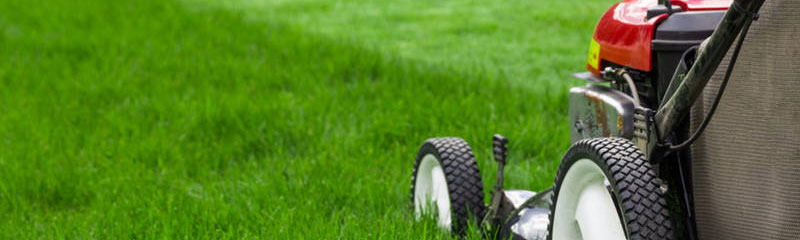
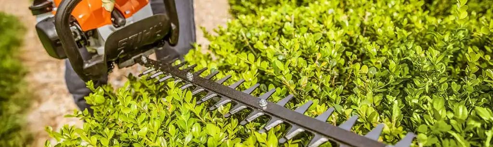

Hard Landscaping
The Bearded Gardener Hard Landscaping Services in Bangor include Experienced & Qualified Landscape Gardeners Offering Numerous Professional Service's. Residential or Commercial.
Get Started
Soft Landscaping
Our experienced team of skilled horticultural operatives have worked on numerous soft planting schemes from formal to the informal, intensive to the extensive, traditional to the unusual.
Get Started
Jobs for the Spring Garden
- Start planting seed potatoes now.
- Order your vegetable seeds now for spring sowing.
- Prune fruit bushes, and roses now.
- Tidy all wall climbers, trim where needed and tie in where needed.
- Plant flower summer bulbs now for colour from now until autumn.
- Use potgrown bulbs for early spring colour and from March onwards, plant bulbs of Dahlia, Begonia & Lily.
- Plant new Barerooted Hedges before end of March.
- Fertilise the lawn now with a slow release fertiliser. Remember that less is more. If you over fertilise in spring you will pay for it in summer because the fast growth will have you mowing the lawn far more than necessary.